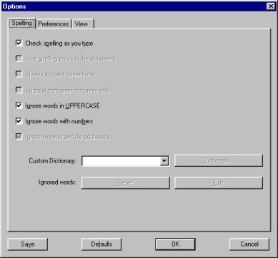

| |
| A propos Pourquoi AbiWord? Généralités Environnement SDI Vs. MDI Installation Windows Linux Intel Linux PPC BeOS Intel BeOS PPC Solaris FreeBSD Les bases #1 Les bases #2 La saisie Le formatage Les paragraphes Les tabulations Les colonnes Les sections Les styles Insertion d'objet Imprimer Rechercher / Remplacer Personnalisation Raccourcis clavier abisource.com FAQ Crédits |
Personnaliser AbiWordAbiWord est personnalisable selon vos besoins ou vos habitudes. Tout d'abord, il est possible de masquer ou d'afficher les règles horizontales et verticales. Pour cela, il suffit de décocher ou de cocher l'option "Règle" dans le menu Affichage. Tous les autres paramètres sont personnalisables dans le menu Édition puis "Options..." La fenêtre ci-dessous apparaît alors:  Cette fenêtre est constituée de trois onglets:
En bas de cette fenêtre se trouve quatre boutons
Il est composé de plusieurs options à cocher ou décocher, parmi lesquelles :
Les autres options à cocher apparaissent en grisé car elles n'ont pas été encore implémentées dans la version 0.7.8 d'AbiWord. Il en est de même pour les boutons Dictionnary, Edit et Reset. |